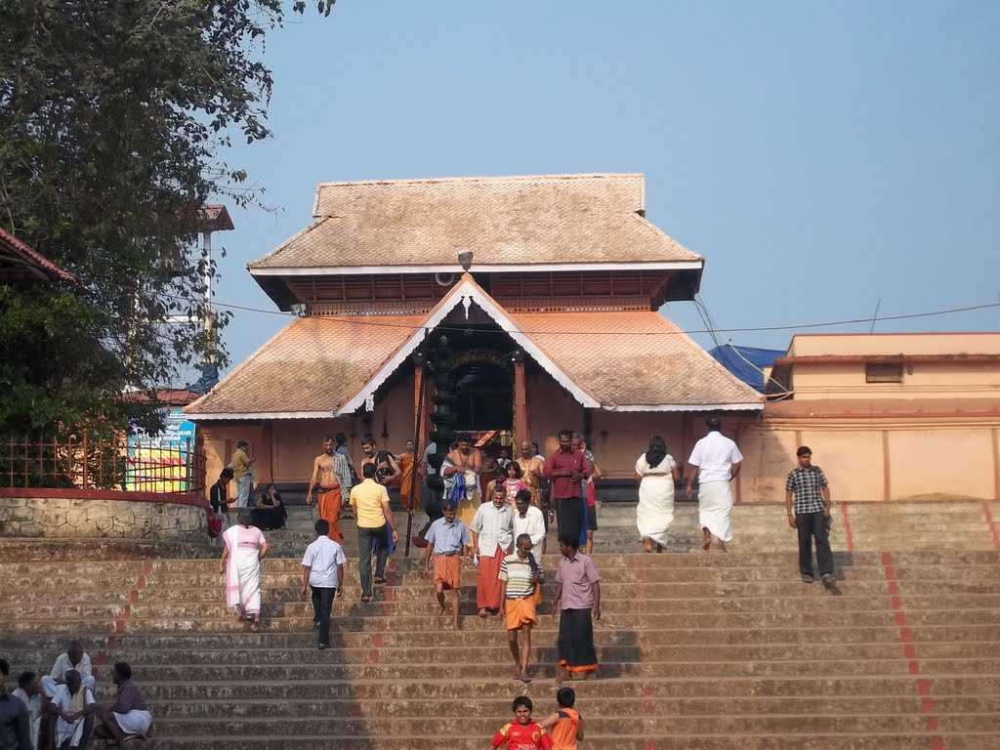

Kottayam - Major Attractions
These are the major tourist attractions in Kottayam

Kumarakom Bird Sanctuary
A paradise for bird watchers, Kumarakom Bird Sanctuary or Vembanad Bird Sanctuary is situated on the banks of Lake Vembanad in kavanar River basin. The place is spread across a huge area of 14 acres providing a natural habitat to about 91 species of local birds and 50 species of migratory birds.
Read More 467 People like this, 1257..


Thirunakkara Mahadev Temple
A popular Hindu shrine and great epitome of Kerala style of architecture, Thirunakkara Mahadev Temple is dedicated to Lord Shiva. The temple was established in 16th century by the king of Thekkumkur.
Read More 700 People like this, 345..